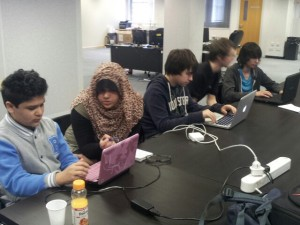
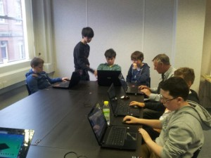

CoderDojo Bolton
starts again today
, so we asked organiser Nour about their plans and requests.
—————–
After a great start on the 15th of march there was a lot of interest from the attendees and great help from the mentors and
Clix
.
At the sessions we covered HTML/CSS, php, python. Some made games using Kodu, others with scratch.

I personally think it was a success because a lot of the attendees have learnt quite a bit, some of them even entering this years Young Rewired State Festival of Code 2014 .
The sessions
start again today
and we are getting more and more people interested and signing up. With the number of attendees growing it would be great to have
more mentors
with different skill sets and hobbies who can help by organising and delivering activity tables/ workshops.

—————–
Find out more about Bolton |
CoderDojo listing
|
Group Website
|
Twitter